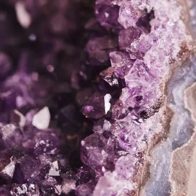
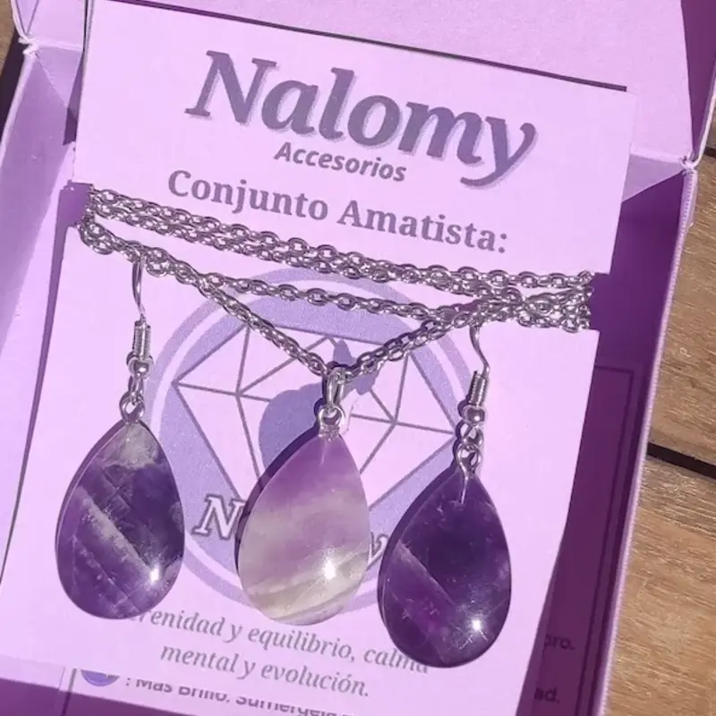
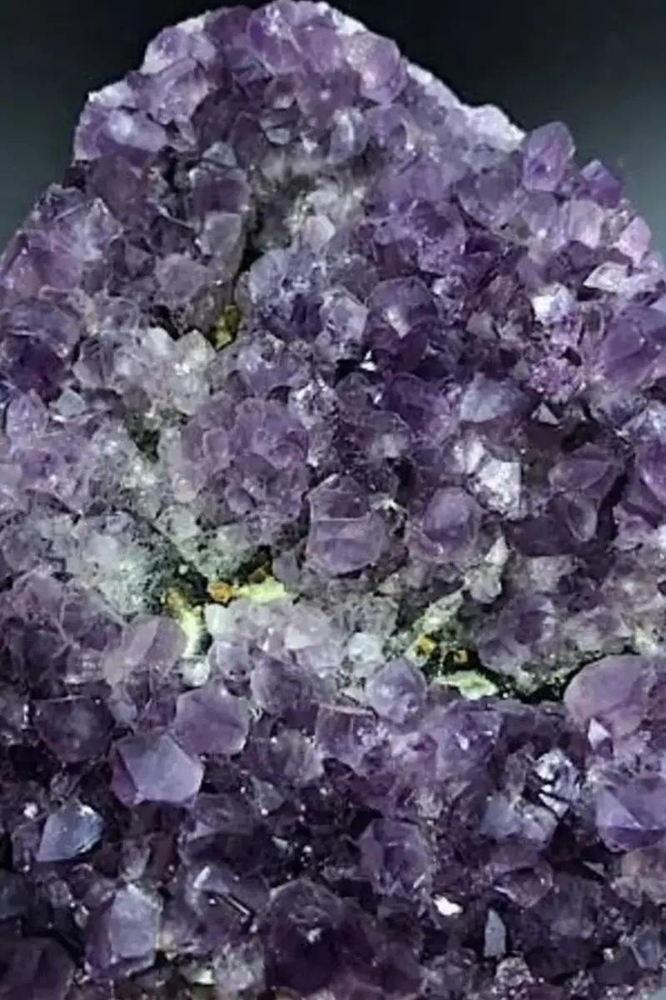
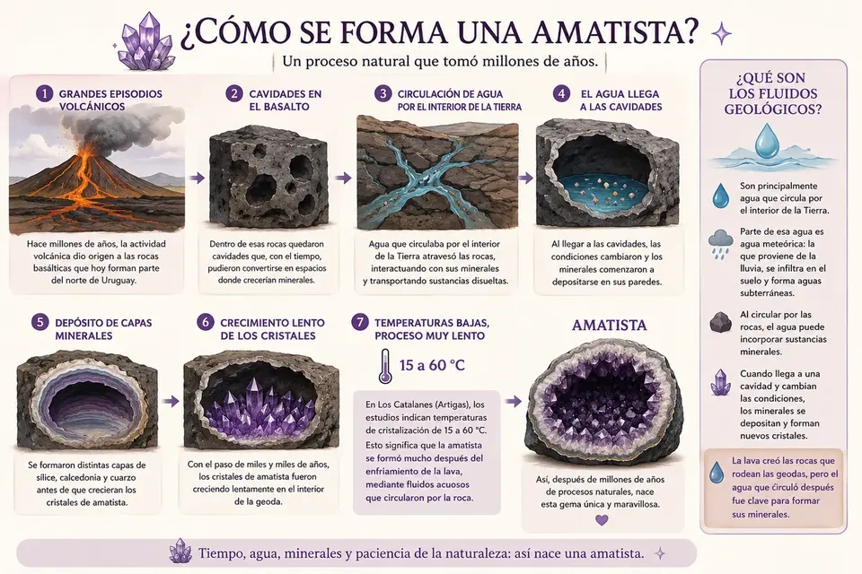
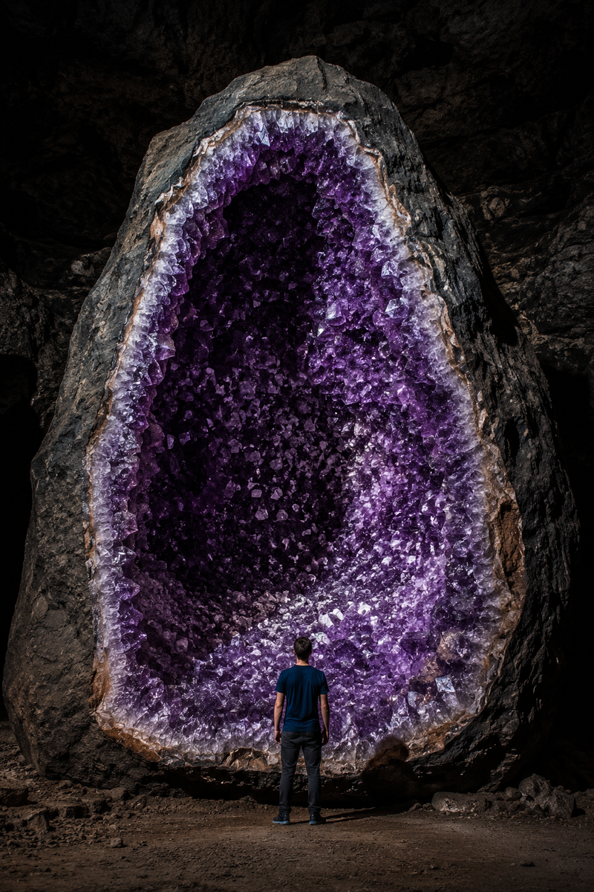
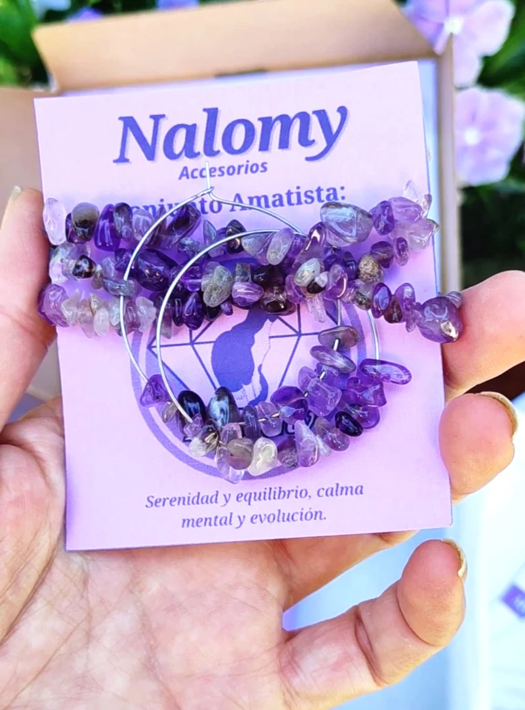
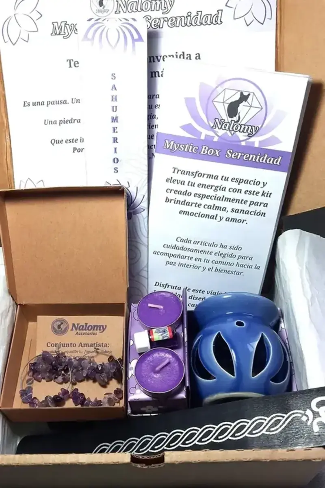

Cada piedra tiene su propia historia, sus asociaciones y los significados
que distintas tradiciones le han dado a lo largo del tiempo. Pero también
existe algo más personal, la conexión que cada persona establece con ella.
Puedes elegir una piedra por lo que representa, por su belleza, por su historia
o simplemente porque sentiste que era la indicada.
No hay una única forma de conectar con una piedra.
Explora, descubre y déjate llevar por la piedra que más te atraiga.
Amatista: significado, propiedades y cómo usarla
La amatista ha fascinado a la humanidad durante siglos. Su característico color púrpura evoca serenidad, introspección y misterio. En el mundo de los cristales se la asocia especialmente con la calma, la protección y la conexión interior.
Amatista en bruto

Así podemos encontrarla en la naturaleza, creciendo dentro de cavidades y geodas.
Amatista pulida

Una vez pulida, sus tonalidades violetas y su brillo pueden apreciarse de una manera diferente.
¿Qué es la amatista y por qué nos atrae?
La amatista es una variedad púrpura del cuarzo, reconocida por su característico color violeta, que puede ir desde un lila suave hasta tonalidades violetas profundas y rojizas.
Su belleza, la variedad de sus tonalidades y la historia que la rodea han convertido a la amatista en una de las piedras más apreciadas tanto en joyería como en diferentes tradiciones relacionadas con los cristales.
Su nombre procede del griego amethystos, relacionado tradicionalmente con la idea de no estar ebrio. Desde la Antigüedad, esta asociación dio origen a diferentes historias y creencias alrededor de la piedra.
Y hay algo que la hace todavía más especial para nosotras.
Desde el 19 de septiembre de 2024, la amatista es oficialmente la Piedra Nacional de la República Oriental del Uruguay, reconocida por la Ley N.º 20.343.
Significado simbólico de la amatista
En distintas tradiciones espirituales y en el mundo de los cristales, la amatista se asocia especialmente con la calma, la protección y la conexión interior. Estas asociaciones forman parte de creencias y usos simbólicos; no son propiedades médicas científicamente demostradas.
Calma mental: se relaciona con la serenidad, el descanso y la posibilidad de bajar el ritmo cuando necesitas hacer una pausa.
Protección: tradicionalmente se la considera una piedra protectora y muchas personas la llevan consigo o la colocan en sus espacios con esa intención.
Conexión interior: se asocia con la introspección, la intuición y la búsqueda de mayor claridad interior.
Dentro de diferentes tradiciones espirituales, también se relaciona con el chakra corona y el tercer ojo.

Primero, ¿qué es el cuarzo?
Para entender cómo nace una amatista, primero hay que conocer al cuarzo. Es un mineral formado por silicio y oxígeno, con fórmula química SiO₂. Es uno de los minerales más comunes de la corteza terrestre y puede aparecer en muchísimas formas, tamaños y colores.
El cuarzo puede crecer formando cristales transparentes, blancos, amarillos, ahumados, violetas y de muchas otras tonalidades. La amatista es precisamente una de sus variedades.
Lo interesante es que la diferencia no está en que la amatista sea otro mineral distinto. Sigue siendo cuarzo. Lo que cambia es lo que ocurrió dentro de su estructura cristalina durante su formación.
El origen geológico: de las coladas de lava a las geodas
Para comprender el nacimiento de las amatistas uruguayas es necesario viajar aproximadamente 130 millones de años al pasado, durante el período Cretácico. En aquel momento, el supercontinente Gondwana comenzaba a fracturarse, dando origen al Océano Atlántico Sur.
Este proceso de separación continental desencadenó uno de los episodios de vulcanismo de fisura más masivos en la historia de la Tierra; la Formación Arapey (parte de la provincia magmática de Paraná-Etendeka). Enormes coladas de lava basáltica emergieron desde el interior terrestre, cubriendo vastas extensiones de lo que hoy es el norte del Uruguay.
A medida que las profundas coladas de basalto fluido se enfriaban y solidificaban en la superficie, los gases disueltos en el magma fueron escapando y quedando atrapados. Este fenómeno dio lugar a grandes burbujas de gas o cavidades dentro de la roca volcánica.
Con el paso de millones de años, estas cavidades vacías dentro del basalto enfriado se convirtieron en el receptáculo perfecto. Por allí comenzaron a circular lentamente fluidos hidrotermales y subterráneos cargados de sílice y hierro disuelto, iniciando el proceso de deposición y cristalización que, con el tiempo y las condiciones adecuadas, daría origen a las espectaculares geodas de amatista.
¿Cómo se formaron las amatistas en Uruguay?
En el caso de las grandes geodas de Los Catalanes, en Artigas, los estudios actuales indican que la amatista se formó posteriormente al emplazamiento de las lavas, dentro de cavidades que ya existían en el basalto.
Después comenzó un proceso extraordinariamente lento. Agua que circulaba por el interior de la Tierra fue atravesando las rocas, interactuando con sus minerales y transportando sustancias disueltas.
Cuando esa agua llegó a las cavidades, las condiciones cambiaron y los minerales comenzaron a depositarse sobre sus paredes. Así pudieron formarse distintas capas de sílice, calcedonia y cuarzo antes de que crecieran los cristales de amatista.
En Los Catalanes, los estudios más recientes estiman temperaturas de cristalización de aproximadamente 15 a 60 °C, lo que indica que la amatista no se formó directamente a partir de la lava caliente, sino mucho después, mediante fluidos acuosos que circularon por la roca.
¿Qué son esos fluidos?
Cuando hablamos de fluidos geológicos no estamos hablando de lava líquida. Se trata principalmente de agua que circula por el interior de la Tierra y que puede calentarse, atravesar grietas y reaccionar con las rocas que encuentra a su paso.
Parte del agua que intervino en la formación de las geodas de Artigas era agua meteórica. En geología, este nombre se utiliza para el agua procedente de las precipitaciones, como la lluvia, que se infiltra en el suelo y termina formando parte de las aguas subterráneas.
Al circular lentamente por las rocas, esa agua puede incorporar sustancias minerales. Después, al llegar a una cavidad y cambiar las condiciones del entorno, algunos de esos componentes dejan de permanecer disueltos y comienzan a formar nuevos minerales.
En otras palabras, la lava creó las rocas que forman el entorno de las geodas, pero el agua que circuló posteriormente por ellas desempeñó un papel fundamental en el proceso que permitió formar sus minerales.

¿Por qué algunas amatistas aparecen sobre ágata?
Si alguna vez has visto una geoda de amatista, quizás hayas notado que los cristales violetas parecen crecer sobre una capa diferente, muchas veces blanca, gris, translúcida o incluso rojiza.
En muchos ejemplares, esa capa corresponde a ágata o calcedonia, dos formas de sílice microcristalina.
Una geoda puede formarse en diferentes etapas. Antes de que aparezcan los grandes cristales de amatista, pueden depositarse otras formas de sílice sobre las paredes de la cavidad.
Después pueden crecer cristales de cuarzo y, bajo determinadas condiciones, aparecer la amatista. Por eso muchas geodas parecen contar su historia por capas.
En las geodas de Los Catalanes se han estudiado precisamente estas diferentes etapas de mineralización, con presencia de calcedonia, cuarzo, amatista y otros minerales.
¿Y de dónde sale el color violeta?
Aquí aparece una de las partes más curiosas de la historia. La amatista sigue siendo cuarzo, pero durante su formación pueden incorporarse pequeñas cantidades de hierro dentro de su estructura cristalina.
Sin embargo, el hierro por sí solo no explica el color violeta. Para que aparezca la característica tonalidad de la amatista interviene también la irradiación natural que actúa sobre el cristal durante largos períodos de tiempo.
Esa radiación procede de elementos radiactivos que existen naturalmente en las rocas y minerales. Con el paso del tiempo, la radiación puede modificar el estado electrónico del hierro incorporado en el cuarzo y generar las condiciones que producen la absorción de luz responsable del característico color púrpura.
Por eso decir que la amatista es simplemente “cuarzo teñido de violeta” se queda muy corto. Es cuarzo, sí, pero su color es el resultado de una historia química y geológica mucho más compleja.
¿Cuánto tiempo necesita una amatista?
No existe un reloj exacto que podamos ponerle a una geoda. Su formación ocurrió en distintas etapas y durante períodos de tiempo enormes.
Las rocas volcánicas que contienen las geodas de la región de Artigas pertenecen al Cretácico temprano. Muchísimo después de formarse esas rocas, el agua comenzó a circular por ellas y los minerales fueron creciendo dentro de las cavidades.
Los estudios de Los Catalanes indican que este proceso de mineralización fue episódico y extremadamente lento, y que pudo desarrollarse durante millones de años.
Así que cuando sostenemos una amatista no estamos viendo simplemente una piedra antigua. Estamos viendo el resultado de una historia geológica larguísima, construida paso a paso dentro de la Tierra.
Y aquí aparece la magia de la amatista
La naturaleza no sigue una receta exacta.
Una cavidad puede quedar vacía o comenzar a llenarse poco a poco con diferentes minerales. Puede formar capas de ágata y calcedonia y, posteriormente, crecer cuarzo en sus paredes. Si se dan las condiciones adecuadas, ese cuarzo puede desarrollar su característico color violeta y convertirse en amatista.
Para que aparezca una amatista tienen que coincidir muchas condiciones. El tipo de roca, la presencia de cavidades, el agua que circula por ellas, los minerales disponibles, la temperatura, las condiciones químicas y, sobre todo, muchísimo tiempo.
Y aun cuando conocemos cómo puede ocurrir el proceso, cada geoda cuenta una historia diferente.
Quizás ahí reside una de las grandes maravillas de la amatista. Sabemos mucho sobre cómo puede formarse, pero la naturaleza nunca siguió una receta que garantizara el mismo resultado.
Algunas historias, después de millones de años, llegan hasta nuestras manos.
Una piedra con historia
Durante siglos, la amatista fue mucho más que una piedra bonita. Su color púrpura hizo que fuera apreciada en joyas, objetos religiosos y piezas vinculadas al poder y al prestigio. Durante mucho tiempo llegó a tener un valor comparable al de otras gemas preciosas.
Ese lugar cambió durante el siglo XIX, cuando el descubrimiento de grandes yacimientos en Brasil hizo que la amatista estuviera mucho más al alcance de las personas.
En Uruguay, la historia tiene un capítulo especialmente cercano. Documentos que datan de alrededor de 1860 ya mencionaban las llamadas “Piedras Brillantes” de Artigas y el interés que despertaban.
Durante generaciones, carros cargados de piedras recorrían los caminos hacia el sur. Con el tiempo, las ágatas y amatistas de la región fueron llegando también a mercados internacionales.
En 2014, Artigas fue declarado Capital Nacional de las Piedras Preciosas y Semipreciosas, Amatistas y Ágatas mediante la Ley N.º 19.238.
Y el 19 de septiembre de 2024 llegó otro reconocimiento especialmente significativo. La Ley N.º 20.343 declaró a la amatista Piedra Nacional de la República Oriental del Uruguay.
La historia tampoco terminó ahí. El distrito gemológico de Los Catalanes, en Artigas, fue incluido entre los primeros 100 sitios de Patrimonio Geológico de la Unión Internacional de Ciencias Geológicas.
Una piedra que nació dentro de la tierra y terminó formando parte de la identidad de todo un país.

El lado espiritual de la amatista
La amatista ha ocupado durante siglos un lugar especial dentro de diferentes tradiciones espirituales. Su color púrpura, su historia y las historias que la rodean contribuyeron a asociarla con la espiritualidad, la contemplación y la transformación.
Hoy muchas personas la incorporan a sus espacios de meditación, sus prácticas personales o sus rituales como parte de una experiencia que puede ser tan personal como la propia piedra.
En distintas tradiciones también se la relaciona con los chakras superiores, especialmente el tercer ojo y el chakra corona.
Cómo usar la amatista en tu día a día
Meditación: puedes sostenerla, colocarla cerca o incorporarla a tu espacio de meditación.
En el hogar: muchas personas la eligen para dormitorios, rincones de descanso o espacios destinados a la calma.
En joyería: llevarla contigo permite mantenerla cerca durante el día y disfrutar tanto de su belleza como de su significado.
En tus rituales: puedes incorporarla a momentos de limpieza, meditación, intención o simplemente a ese pequeño ritual que tenga significado para ti.

Cómo cuidar una amatista
La amatista tiene una dureza de 7 en la escala de Mohs, por lo que es una piedra adecuada para joyería, pero eso no significa que sea imposible de rayar o dañar. La escala de Mohs mide resistencia al rayado, no resistencia a golpes o roturas.
Para limpiarla, puedes utilizar agua a temperatura ambiente, y después dejarla secar al aire en un paño suave. Evita golpes fuertes, productos químicos agresivos y cambios bruscos de temperatura.
También conviene evitar la exposición prolongada a una luz solar muy intensa, ya que algunos ejemplares pueden perder intensidad de color con el tiempo.
Si la llevas como joya, guárdala separada de otros minerales o piezas que puedan rayarla. Y recuerda que dureza no significa indestructibilidad.
Nuestro sentir en Nalomy
Estamos seguras de que, después de conocer su historia, ya no ves la amatista con los mismos ojos.
Ahora sabes que detrás de cada cristal hay millones de años, una combinación de circunstancias que tuvo que darse de una manera muy particular y una historia que nunca vuelve a repetirse exactamente igual.
Quizás ahí está lo verdaderamente especial. Cada amatista es única, como tú.
Para nosotras, la amatista tiene algo de serenidad, de misterio y de conexión con un lugar muy nuestro. Por eso la elegimos para la Mystic Box Serenidad.
Pero esta es nuestra elección, no una regla. Si personalizas tu Mystic Box, puedes elegir otras piedras según lo que quieras expresar, regalar o simplemente porque una piedra te atraiga más.
No creemos que una piedra tenga que hacer el trabajo por ti. Nos gusta pensarla como un pequeño recordatorio de aquello que quieres cuidar o cultivar en ese momento.

Llevá la amatista contigo
La amatista es la piedra central de nuestra Mystic Box Serenidad, creada para acompañarte en tus momentos de calma y conexión.
Descubrir Mystic Box SerenidadFuentes y referencias
Para elaborar esta guía consultamos fuentes gemológicas, científicas y organismos oficiales de Uruguay.
- Gemological Institute of America (GIA). Información sobre amatista, cuarzo, dureza, color y características gemológicas. Ver fuente
- Mineralium Deposita — Springer Nature. Investigación sobre las geodas de amatista de Los Catalanes, su formación, mineralización, fluidos y temperaturas. Ver estudio
- Presidencia de la República Oriental del Uruguay. Ley N.º 20.343, de 19 de septiembre de 2024, que declara a la amatista Piedra Nacional del Uruguay. Ver ley
- Ministerio de Industria, Energía y Minería — Uruguay. Información sobre los yacimientos de amatista de Artigas, Los Catalanes y su patrimonio geológico. Ver fuente
- Unión Internacional de Ciencias Geológicas. Información sobre el distrito de amatistas de Los Catalanes y su reconocimiento como sitio de patrimonio geológico. Ver fuente